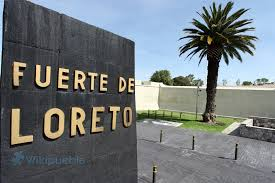

Batalla de Puebla
Cuatro y cinco de Mayo
Las protestas del 4 de mayo fueron un reflejo de transformaciones muy profundas que se estaban produciendo en la sociedad china. La creciente industrialización del país y la mejora en el sistema educativo provocaron un crecimiento de la clase media urbana que veía con preocupación el estado de crisis nacional en que se encontraba el país.
El Cinco de Mayo fecha de la conmemoración de la Batalla de Puebla. Marca la primera vez que el ejército mexicano pudo derrotar a una potencia extranjera mejor preparada, en este caso los franceses. La batalla tuvo lugar en la actual ciudad de Puebla de Zaragoza el 5 de mayo de 1862, entre los ejércitos de México y Francia.

Conoce más sobre "La batalla del cinco de Mayo".
Fuertes de Loreto y Guadalupe
Los fuertes de Loreto y Guadalupe son unas antiguas edificaciones militares que se encuentran en la ciudad de Puebla. Originalmente se trataba de capillas construidas en lo alto de un cerro Acueyametepec, que fueron reconstituidas a principios del siglo XIX como fortificaciones con finalidades militares. Sirvieron como escenario principal tanto en la batalla como en el sitio de Puebla, durante la Segunda Intervención Francesa en México. Declarados como patrimonio histórico de México, actualmente albergan museos de sitio.

Los fuertes se ubican en la zona nororiente de Puebla, en un cerro conocido como Acueyametepec durante la época prehispánica. En el siglo XVI, frailes franciscanos construyeron una ermita en la cara este del cerro; más tarde, esa edificación se expandió a templo bajo la advocación de San Cristóbal, que finalmente pasó al control de los padres betlemitas, por lo que a la zona se le conoció como cerro de Belén. En la cara oeste se erigió otro templo, al cual se le asignó la advocación de la Virgen de Loreto, mientras que el templo originario pasó a dedicarse a la Virgen de Guadalupe.
En 1930 los fuertes y la zona aledaña al cerro fueron declarados propiedad de la nación al servicio al pueblo, y en Loreto se construyó un Museo de Guerra. En 1962, con motivo del centenario de la batalla, el museo se amplió y se dotó de servicios al área del parque. Actualmente, en la Zona Histórica de los Fuertes se ubican también un Museo Regional del Instituto Nacional de Antropología e Historia, el Auditorio de la Reforma y la Casa Puebla. Además, a un costado se ubica el Centro de Exposiciones de Puebla y un monumento donde reposan los restos de Ignacio Zaragoza y su esposa Rafaela Padilla.
Personajes Importantes de la batallla
1.-Ignacio Zaragoza nació en el poblado de La Bahía del Espíritu Santo, en el estado de Coahuila y Texas, hoy Goliad. Fue el segundo hijo de Miguel Zaragoza Valdés, de Veracruz, y María de Jesús Seguin Martínez, de San Antonio de Béxar, esta última pariente de Juan José Erasmo Seguin. Cuando los rebeldes texanos, apoyados por los Estados Unidos de América, ganaron la Guerra de independencia de Texas, Miguel Zaragoza, que era soldado de infantería, se mudó con su familia desde la ciudad Presidio de La Bahía de Espíritu Santo (hoy Goliad, Texas), donde había nacido su hijo Ignacio, a la ciudad de Matamoros en 1834, y posteriormente, en 1844, a la ciudad de Monterrey, donde Ignacio entró al seminario, estudios que abandonó en 1846, convencido de que no tenía vocación sacerdotal.

2.-Benito Pablo Juárez García (San Pablo Guelatao, Oaxaca, 21 de marzo de 1806 – Ciudad de México, 18 de julio de 1872) fue un abogado y político mexicano, de origen indígena (de la etnia zapoteca), presidente de México en varias ocasiones, del 18 de diciembre de 1857 al 18 de julio de 1872. Se le conoce como el «Benemérito de las Américas». Es célebre su frase: «Entre los individuos, como entre las naciones, el respeto al derecho ajeno es la paz». Benito Juárez vivió una de las épocas más importantes y difíciles de México, considerada por muchos historiadores como la consolidación de la nación como república. Juárez marcó un parteaguas en la historia nacional, y fue protagonista de primer nivel de esta época. Su biografía durante los años que ocupó la presidencia es una parte sobresaliente de la historia de México.